User manual
Introduction
Dear Customer,
This document has been created to explain the operating of the software EasySolder 7. We recommend that all users intensively familiarize themselves with the equipment, the technology and this document, before operating the Martin Rework System. The complexities, tasks and requirements, when faced with actual processes, may differ from those described.
When specific application questions arise please contact us.
Application structure
Main window
After launching the application, the main screen is shown. All operations are started from this screen, using the main menu, bottom left buttons or buttons on the right panel.
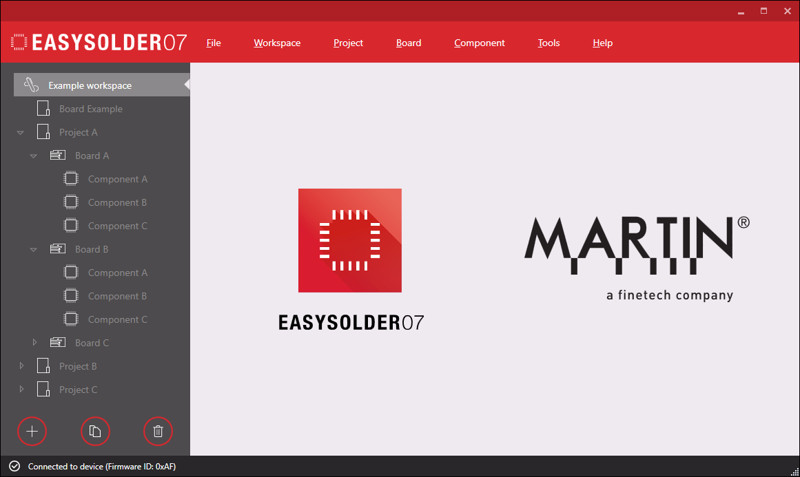
Tree
The application tree's purpose is to organize user data in an easy manageable way. The hierarchy of items consists of the root workspace, projects, boards and components.
Tree items follow these rules:
- A workspace can contain multiple projects
- A project can contain multiple boards of different types
- A board can contain multiple components of different types
- Only one workspace can be open in the application at a time, but it is possible to switch between workspaces (See the Workspace section)
Tree structure of a sample project
-
Workspace
-
Project a
-
Board a
- Component a
- Component b
- Component c
-
Board b
- Component a
- Component b
- Component c
-
Board a
-
Project b
-
Board a
- Component a
- Component b
- Component c
-
Board b
- Component a
- Component b
- Component c
-
Board a
-
Project a
Right panel
The content displayed on the right panel depends on the item type selected on the application tree.
| Selected item | Elements displayed on right panel |
|---|---|
| Workspace | Start screen |
| Project | Start screen |
| Board | Board data: Underheater image, Board picture, Board details, Configure button |
| Component | Component data: Nozzle picture, Nozzle name, Component description, Profiles list, Open profile button, Edit profile button, Delete profile button, Add profile button |
Main menu
The main menu is displayed in the top of the application window.
![Main menu]()
Main menu structure with items and sub-items
-
File
- Settings
- Exit
-
Workspace
- New
- Open
- Edit
- Recent
- Close
-
Project
- New
- Edit
- Import old projects
- Duplicate
- Delete
-
Board
- Add
- Edit
- Duplicate
- Delete
-
Component
- Add
- Edit
- Duplicate
- Delete
-
Tools
- Dispensing settings
- Camera calibration
- Arm calibration
-
Fans
- Start
- Stop
-
Vacuum
-
Nozzle
- Start
- Stop
-
Vacuum pen
- Start
- Stop
-
Nozzle
- Temperatures
-
Help
- About
Shortcut buttons
Shortcut buttons are displayed in the left bottom side of the application window. They are used to perform add, duplicate and delete operations on the tree.
- Add button is represented with a
+sign - Duplicate button is represented with a
copy filesymbol - Delete button is represented with a
trashcansymbol
![Shortcut button]()
Using shortcut buttons
- Select a project, board or component element in the tree
- Click on the shortcut button of the preferred action; the action will be executed for the selected tree item
Status bar
Status bar is the footer of the application. It is used to display information like the device connection status. If the device is connected "Connected to device" message is displayed with device firmware id in the brackets.
![Status bar]()
Workspace
A workspace is a collection of related projects and their components. It is possible to load and work with an existing workspace or create a new one.
Create workspace
Steps to create workspace
- In the Workspace menu, select New
- Fill in the Name input
-
Select workspace location on disk
- By default, the application suggests placing the workspace in
Users\Public\Documents\Martin\EasySolder\Workspacespath. The path can be changed with the Browse button.
- By default, the application suggests placing the workspace in
- Click Create. The new workspace will be created on disk and loaded into the application.
![New workspace]()
Open workspace
Open workspace is accessible from Workspace menu and it opens a file browser with the latest saved path location.
Steps to open workspace
- Open Workspace menu
- Select Open
-
Browse for the preferred workspace in the file browser
- Is important to select the workspace folder at opening
- Select the PreferredWorkspaceName.json file from folder
- Select Open
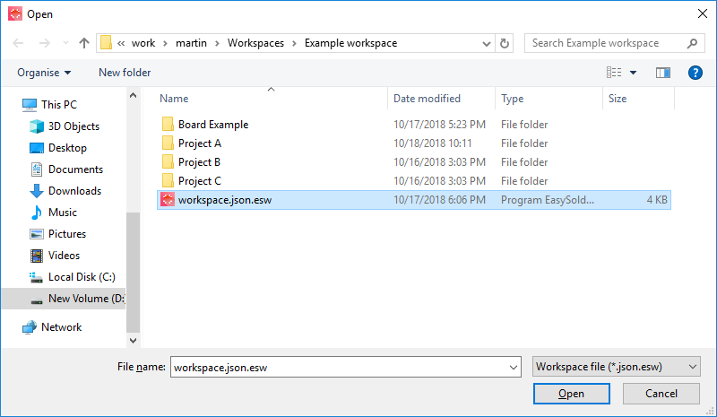
Recent workspace
Opens a recently closed workspace. Use this to quickly switch between workspaces. The previous running workspace is automatically closed before opening the new one. The application remembers up to 5 most recently used workspaces.
Steps to open recent workspace
- Open Workspace menu
- Select Recent
- Select one of the listed workspaces
Edit workspace
This window can be used to edit workspace properties:
- Workspace name
- Workspace path (Location on disk)
Changing the path will cause all workspace files to be moved to the new location.
Steps to edit workspace
- Open Workspace menu
- Select Edit
- Change workspace name and/or path location
- Save
![Edit workspace]()
Project
Create project
Projects can be added to a workspace. A project is used to organize boards into separate groups.
Steps to create project
- Select the workspace
- Open Project menu
- Select New
- Enter project name
- Click Add
![Create project]()
Edit project
While editing project, only project name can be changed.
Steps to edit project
- Select the project
- Open Project menu
- Select Edit
- Change project name
- Save
![Create project]()
Import old projects
Easy Solder 5 application projects can be imported using "Import old projects" option from the Project menu. In order to successfully perform the import, the Data folder of the old software installation needs to be selected correctly.
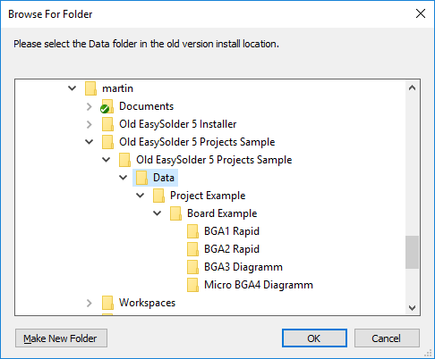
The elements that are compatible with the new application are imported. In case of incompatible elements, a partial import is performed, and a warning information message is displayed. All the actions that can be made with a newly added component are available for old components. Soldering/desoldering can be executed for old profiles as well.
Steps to import old project
- Open Project menu
- Select Import old projects
- Browse for the folder which contains the old project
- Select the project folder
- Click Ok
Duplicate project
Duplicate option is used to make a copy of an existing project. All the boards with corresponding configurations, components and component profiles are duplicated. The option is available from Project menu and from bottom left side menu. When duplicating projects, the new project is added with project name and "Copy" suffix in order to avoid name collision.
Steps to duplicate project
- Select the project
- Open Project menu
- Select Duplicate
Delete project
Projects can be deleted using Delete shortcut button or Project menu delete option.
Steps to delete project
- Select project
- Select Project menu
- Click Delete
- Confirm the option in "Delete selected project" pop-up
Board
The board represents the PCB and is included in projects. Board data consists of the following:
- Board name
- Solder type: Can be lead-free or leaded.
- Board image: Allows easy visual recognition of the board.
-
Underheater type: Needs to be selected according to the installed underheater. The following underheater types are supported now:
-
IXH
- Only for the EXPERT 04.6 rework station
-
HV
- Number of lamps: 6
- Can be used with the EXPERT 10.6 rework station
-
HXV
- Number of lamps: 8
- Can be used with the EXPERT 10.6 rework station
-
IXH
When adding a new board, an underheater type must be selected. If the application is connected to a rework station the detected underheater is selected automatically. Based on the selected underheater, a default underheater profile is generated.
Underheater profile
The underheater profile has the purpose of ensuring the desired board temperature is reached and the board is heated uniformly during soldering, in order to prevent damage caused by large temperature differences (warping, cracks, bends, etc.)
The generated underheater profile contains only minimum heating settings, and it will need to be edited in the underheater profile configuration or with the Underheater Autoprofiler to achieve the desired temperature on the board.
Each underheater has a different way of configuring the profile. Therefore, changing the underheater on the board will reset its underheater profile to the default.
Add board
Add board window can be accessed from Board menu and from the bottom left side menu + shortcut button.
Steps to add board
- Click on the preferred project
- Select Board menu
- Click Add
- Enter board name
-
Select underheater installed on the device
- While the device is connected the Autodetect button is available.
- Autodetect option automatically selects the underheater installed on the device.
-
Select Solder type. Two options are available
- Lead free
- Leaded
-
Change board image
- A default board image is automatically loaded by the application.
-
Save
- The board is saved in
Workspace/Project/BoardNamefolder. After saving, the new board is displayed in the tree, under project item.
- The board is saved in
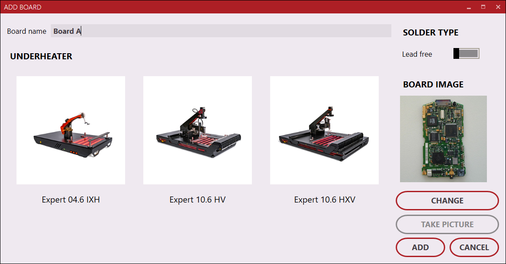
Edit board
Edit board can be accessed from Board menu. The board needs to be selected to enable Edit option.
Steps to edit board
- Select board that needs changes
- Select Board menu
- Click Edit
- The Edit board window is loaded with the previously saved configuration.
- Change board name and image if applicable
- Change solder type if applicable
-
Select board type manually or using Autodetect
- While the device is connected the Autodetect button is available. This option automatically selects the underheater used by the device.
- Press Save
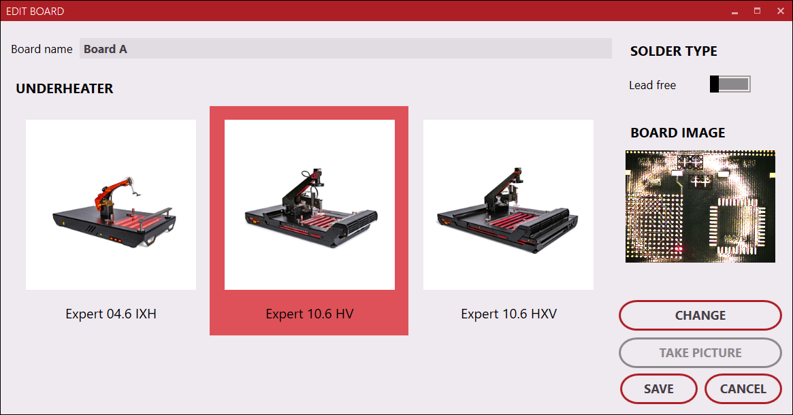
Duplicate board
Duplicate option is used to make a copy of an existing board. All the board configurations, component and component profiles are duplicated. The option is available from Board menu and from bottom left side menu. When duplicating board, the new board is added with board name and a "Copy" suffix, meant to avoid name collisions.
Steps to duplicate board
- Select board
- Select Board menu
- Click Duplicate
Delete board
Board can be deleted using Delete button or Board menu delete option.
Steps to delete board
- Select board
- Select Board menu
- Click Delete
- Confirm the option in "Delete selected board" pop-up
Underheater profile configuration
The Underheater profile configuration window can be opened using the Configure button for the selected board. The displayed inputs depend on the configured underheater type.
HV and HXV underheater profiles
For HV and HXV underheaters, the following settings can be configured:
| Setting name | Details |
|---|---|
| Lamps | The lamps can be customized by using displayed checkboxes. If a rework station is connected, the lamps covered by the hand rest are highlighted. |
| Hybrid flow | Sets airflow level for the underheater. Common optimal level is 1 |
| Operating mode | Can be set to Temperature or Power. |
Further configurations depend on the selected operating mode.
Operating mode: Temperature
In this operating mode a sensor needs to be attached to the board.
Sensors 1 or 5 can be used. If both sensors are connected, the higher temperature value will be considered when sampling.
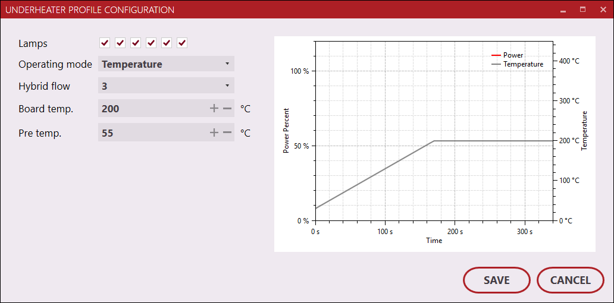
Hint
Temperature operating mode is the equivalent of Closed-loop in previous software versions.
Temperature operating mode uses the following settings:
| Setting name | Details |
|---|---|
| Board temperature | This is the desired board temperature in °C. The underheater will start with full power, monitoring as the temperature on the sensor is rising. When the desired temperature has been reached on the sensor the underheater enters regulation mode. Using the constantly-monitored sensor data, it switches on and off as required to maintain the desired board temperature.Minimum value: 50Maximum value: 210Default value: 150 |
| Pre-temperature | Preheat temperature represents the board temperature that has to be reached by the underheater before the Top Heater profile is started. When this parameter has a value greater than 0, the Underheater and Top Heater profiles are not started at the same time.Minimum value: 0Maximum value: 200Default value: 0 |
Operating mode: Power
This operating mode can be used to heat up the board to the desired temperature without attaching sensors. The underheater is operated according to a previously learned or directly entered set of parameters.
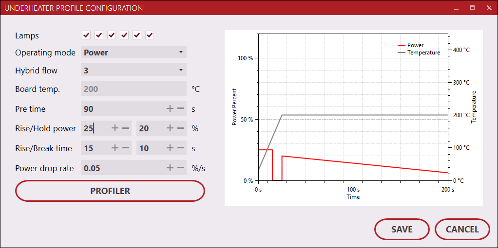
Hint
Power operating mode is the equivalent of Open-loop in previous software versions.
Optional sensors
In Power operating mode sensors can be connected to the ports of the rework station. In this case temperature graphs will be observed on the graphic display, although they will not have any influence on the process control.
Sensor placement
A temperature sensor placed on the bottom side of the PCB will be influenced by the heat input from the top heater. It is normal that a rise in temperature will be observed; this is normally caused by the incorrect placement of the sensor.
The underheater will achieve the desired board temperature by applying a power profile consisting of four phases: rise, break, hold, and cooling.
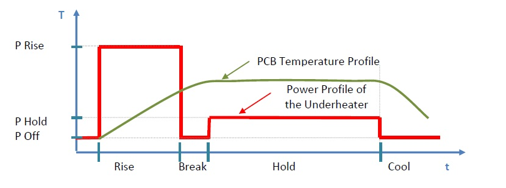
| Phase | Description |
|---|---|
| Rise phase | A power setting (usually 100% power) is applied that heats the PCB for a defined length of time. |
| Break phase | The heating phase is followed by a break when the underheater is switched off, but continues transferring its residual heat. During this phase the PCB temperature carries on rising. |
| Hold phase | In this phase the underheater starts again and applies a power setting that will keep the board temperature constant. |
| Cool phase | The cooling phase completes the rework profile. |
The parameters that define the power profile are described below. The profiler can be used to calculate most of these values automatically. The only parameter that is not calculated by the profiler is Power drop rate.
| Parameter name | Value |
|---|---|
| Board temperature | Desired board temperature. This value is read-only. It can be changed in the Profiler window by running the profiler. |
| Pre time | Specifies the time delay in seconds from underheater start until the top heater starts. If this value is 0 the underheater and top heater start simultaneously. This is the time-equivalent of the Pre-temp. value from the temperature operating mode Minimum value: 0Maximum value: 500 |
| Rise power | Power level that is maintained during the rise phase. This value is expressed in %. Usually rise power is used at 100% to reach the desired temperature in the shortest time possible. Minimum value: 0Maximum value: 100 |
| Rise time | Time interval during which the rise power is maintained. Minimum value: 1Maximum value: 500 |
| Break time | Value in seconds that defines the Break phase duration. Break time must be set as a safety measure because rapid heating without a brief break in energy input would result a temperature overshoot. Minimum value: 0Maximum value: 255 |
| Hold power | Defines the power level that is maintained during the hold phase. Like the Rise power value, it is expressed as a percent of maximum underheater power.Minimum value: 0Maximum value: 100 |
| Power drop rate | Power drop rate reduces the Hold power value over time with the specified value. It is expressed in percent per second. The need for this parameter arises from the possibility that by energy being supplied from the top heating the PCB/module temperature can rise continuously and no hold power setting can be determined that would ensure a constant PCB temperature. Minimum value: 0.00Maximum value: 10.00 |
Power drop example
For Power drop rate a setting of 0.05% is a sensible value, meaning that the power setting in the hold phase is reduced by 0.05%/s, i.e. 1% in 20 seconds until the profile ends.
IXH Underheater profiles
For IXH underheater, the profile consists only of a rise phase directly followed by a hold phase. The following settings define the underheater profile:
| Setting | Description |
|---|---|
| Preheat time | Specifies the time delay in seconds from underheater start until the top heater starts. It has the same meaning as in the HV and HXV profiles. |
| Start power | Power level applied at the beginning of the rise phase. This will gradually rise to match the End power value over the course of the rise interval. The value is expressed in watts. |
| End power | Power level applied at the end of the rise phase. The value is expressed in watts. |
| Hold power | Power level that is applied during the Hold phase. The value is expressed in watts and remains constant throughout the hold phase run. |
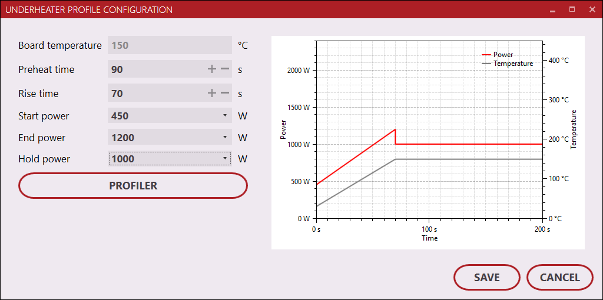
Underheater Profiler
This feature is available for all underheater types. It is used to establish the correct heating parameters for the underheater profile.
Target temperature and preheat temperature are used as input values for the profiler process. The profiler will calculate the rest of the process parameters.
Maximum temperature that can be set for underheater is 210°C, this also serves as a protection for the component. Overheating can produce damage on the PCB.
The underheater profiler can be launched by pressing the Run profiler button. Before starting the actual process, it will ask the operator to confirm a set of requirements.
Underheater profiler requirements
| Requirement | Description |
|---|---|
| Connect sensor | Underheater sensor must be connected to the board bottom side. For EXPERT 10.6 rework stations, Sensor 1 or Sensor 5 can be used. If both sensors are connected, the higher temperature value will be considered when sampling.For EXPERT 04.6 rework stations Sensor 1 can be used. |
| Check board temperature | The temperature on the PCB sensor must be lower than 45°C. If the sensor temperature is greater than 45°C, EXPERT 10.6 rework stations will automatically start cooling with fans, whereas EXPERT 04.6 rework stations will just wait for the temperature to drop. In all cases this cooling step can be bypassed by pressing the Start button. |
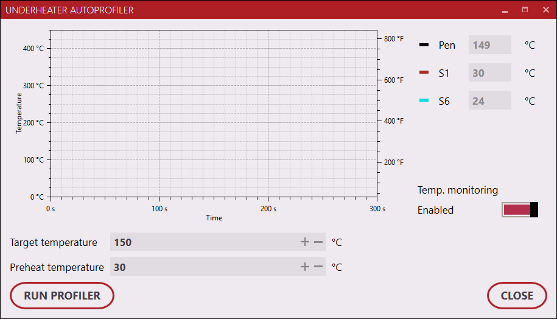
Steps to run profiler
-
Connect sensor
1or5to board- Only sensor
1is available for EXPERT 04.6 device. - Is recommended to place the sensor in a darker place of the PCB, avoiding shiny surfaces.
- When both sensors are connected the application takes in consideration the maximum between the two sensors.
- Only sensor
- Select board
- Select Configure
- Click Profiler
- Select Temperature and Preheat temperature
-
Run profile
- The application will remind to attach the sensor at profile run start
- Close the profiler window
- Remember to save the settings in the Underheater profile configuration window
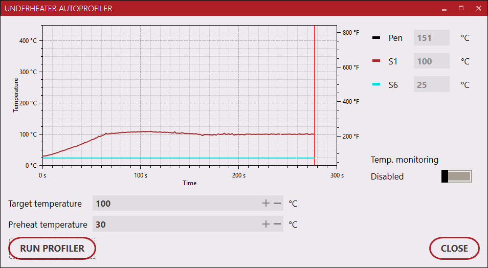
Once the profiling process has completed successfully, the calculated values will be assigned to the profile upon closing the profiler window.
WARNING
The profiled values are not automatically saved in the Underheater profile configuration window. Remember to click Save in order to commit the changed values to disk.
Profiler can be accessed from the following places
- One option is by selecting the board, then Configure button
- The second option is to select the component profile, then Profiler button
Underheater profiler operation
When the underheater profiler starts, lamps are turned on. The profiler tries to attain the target temperature as quickly as possible using 100% of the available power. When the board temperature is reached, the underheater switches off. During off time residual heat in underheater lamps maintain the PCB's temperature stable. After this point the software controls power so that the assembly remains at the desired temperature. The profiler analyzes the underheater controls and works out an optimum power value (Hold power), Rise time and Break time.
Component
A component is an SMD chip that can be soldered to- or desoldered from a board. The component's most important property is the required nozzle type. The default top heater profile is based on the nozzle type.
A component can have several component profiles, described in the next paragraphs.
Nozzle type update
Changing the nozzle type of a component will not change already existing profiles.
Add component
Components are added to existing boards. Each board can have multiple components and each component can have multiple profiles.
Components can be added using + button or from the Component menu.
Steps to add a component
- Select board
- Select Component menu
- Click Add
- Add component name and description
- Select the nozzle type that is compatible with the chip
- Click Add
- After the component is saved, it is automatically displayed in the application tree.
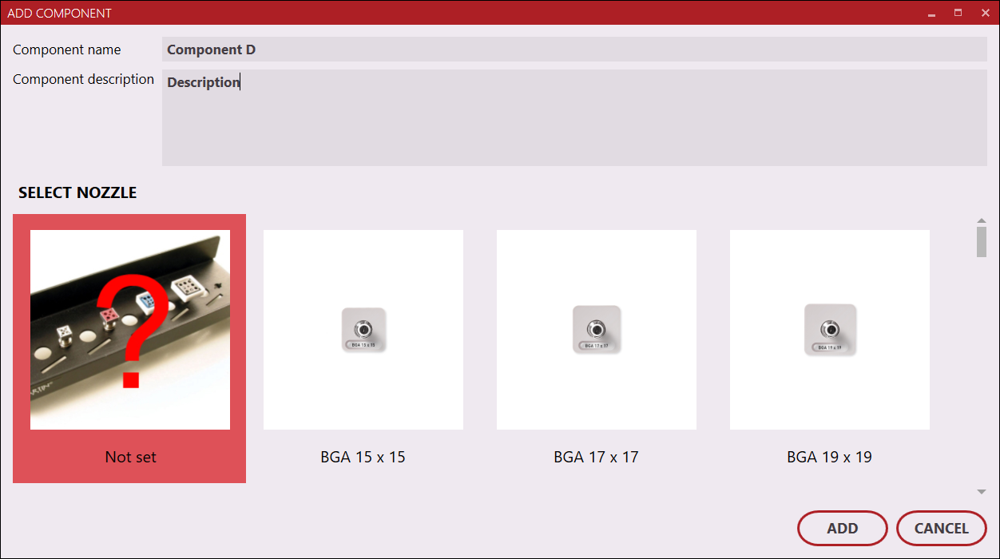
Edit component
Already existing components can be edited, and the associated component profiles are kept unchanged.
Steps to edit component
- Select component
- Select Component menu
- Click Edit
- When opening Edit component window, the previously saved component configuration is opened.
- Select nozzle that is compatible with the chip
- Change component name and description
- Save
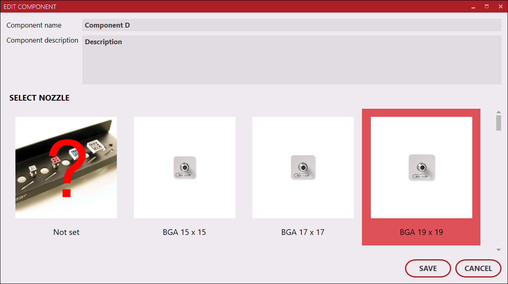
Duplicate component
Components can be duplicated using Duplicate button or from Component menu. Components are duplicated with all corresponding profiles. When duplicating component, the new component is added with component name and "Copy" suffix.
Steps to duplicate component
- Select component
- Open Component menu
- Select Duplicate
Delete component
Delete component option is available using Delete button and Component menu.
Steps to delete component
- Select component
- Open Component menu
- Select Delete
- Confirm in Delete selected component pop-up
Component profile
A component profile contains the information needed for soldering and desoldering operations. The profile parameters are adjusted specifically according to component type and PCB type.
A component profile consists of:
- An underheater profile
- A top heater profile
- Pickup data
- Cooling phase data
The underheater profile is transferred from the component's board when the component is created.
Future versions
Changing the underheater profile on the board level will not modify the board's existing components, but new components will use the updated underheater profile.
This behavior may change in the future, so that changing the underheater profile of a board will update the underheater profile of contained components as well.
The top heater profile is created based on the selected solder nozzle. Changing a component's solder nozzle will not change existing profiles.
Add component profile
Steps to add component profile
- Select component
- Click the
+button in the Profiles section
Delete component profile
Steps to delete a component profile
- Select component in the main window tree
- In the Profiles section, click the
-button corresponding to the desired profile - Confirm the operation in the displayed pop-up
Component profile window
The component profile window can be used to:
- View and edit profiles
- Configure profiles automatically using the top heater autoprofiler
- Run soldering and desoldering
- Execute related tasks: clean pad, placement
To open the component profile window:
- Select a component in the tree. The component panel will be loaded in the right-side view.
- Click the Open button of the desired profile from the profiles list.
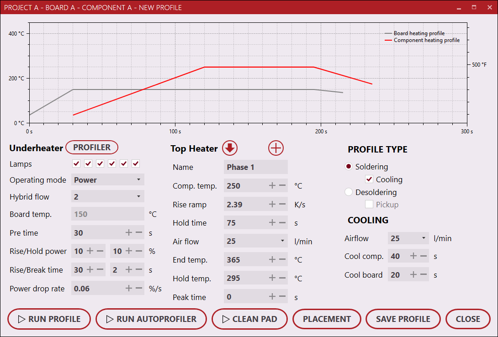
Top heater profile
The top heater profile has one or more heating phases. Each phase is further divided in the following sub-phases:
- Rise
- Peak
- Hold
The last part of the profile consists of a cooling phase.
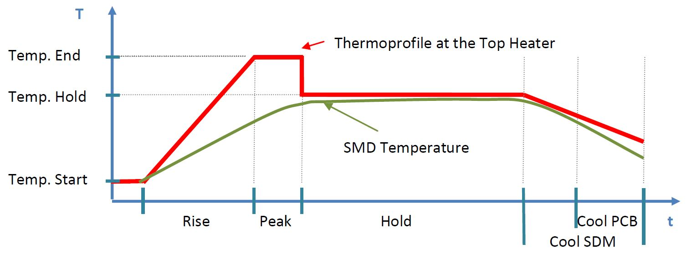
The parameters that define a phase are described below. The Profiler can be used to calculate most of these values automatically.
| Parameter name | Description |
|---|---|
| Name | Define a meaningful name for the phase |
| Component temperature | Soldering temperature of the componentMinimum value: 150Maximum value: 320 |
| Rise ramp | Rise ramp determines how fast the solder pen will reach the end temperature. It is measured in K/sMinimum value: 1.00Maximum value: 3.00 |
| Hold time | Specifies the amount of time during which the soldering temperature is to be maintainedMinimum value: 0Maximum value: 300 |
| Air flow | This value specifies the delivered hot air volume. Small components should not be exposed to high air flows. The increased air pressure tends to push the components down, which can lead to electrical short-circuits. |
| End temperature | End value of the heating ramp that the hot gas source follows to achieve the target temperature of the componentMinimum value: 150Maximum value: 450 |
| Hold temperature | Holding temperature of the hot gas source to keep the component temperature constant Minimum value: 150maximum value: 450 |
| Peak time | Because of the latent energy of the component on the board it is possible that the component may not have reached the required temperature immediately. To give it time to catch up, the end temperature is maintained by the time specified by this parameter.Minimum value: 0Maximum value: 40 |
Note
For EXPERT 04.6 rework stations the maximum value for End temperature and Hold temperature is 400°C.
By default, a top heater profile has one heating phase. To add more phases, use the + button next to Top Heater section.
Cooling phase
The cooling phase can be enabled for soldering profiles. The following parameters can be configured:
| Parameter name | Description |
|---|---|
| Airflow | Top heater airflow for the cooling phase, in liters per minute. |
| Cool component time | Amount of time during which the top heater will cool the component, in seconds. |
| Cool board time | Amount of time during which the underheater and hand rest will cool the board. |
Note
For EXPERT 04.6 rework stations the Cool board option is not available.
Pickup
Pickup can be enabled for desoldering profiles. The following parameters can be configured:
| Parameter name | Description |
|---|---|
| Pickup mode | Placement nozzle: Pickup will be executed by the placement nozzle. Solder nozzle: Use this option if the component should be lifted with the vacuum-pen of the solder nozzle (requires special solder-nozzle tools). Manual: At the end of reflow the system lifts the solder pen up and moves towards the rear parking position, allowing the component to be picked up manually with the vacuum pen or tweezers. |
| Double pickup | Enable\disable double pickup. For double pickup, the second component is heated using the hold temperature for 30% of the hold time. |
Note
Pickup mode selection is not available for EXPERT 04.6 rework stations. In this case only the Manual mode is available.
Get recommended values button
This button calculates recommended process values for each phase based on the Component temperature parameter. Process values are End temperature and Hold temperature.
Top Heater Autoprofiler
Use the top heater autoprofiler to further improve the generated recommended values for the top heater profile. This will ensure a good reflow profile for soldering and desoldering operations. The autoprofiler can refine the Hold temperature and Peak time (if it is required) for each top heater phase.
Additional info
Easy Solder profile controls the energy flow to ensure that thermal limits for components, other surrounding devices and the printed circuit boards are not exceeded. The values for the initial profiler procedure are loaded with the selected soldering tool. Therefore, it is recommended not to modify SMD data before having executed the profiler with original settings once. Usually top heater profiler is used for desoldering, as it's the easiest way to determine the melting point for chip contacts.
Autoprofiler operation
-
Launch autoprofiler
Click the Run Autoprofiler button on the Component profile page. This opens the Solder preparation window which takes care of all the pre-soldering checks. -
Confirm pre-soldering checks in the Solder preparation window:
-
Check board setup, connect sensor
For EXPERT 10.6 rework stations, connectSensor 6to the component. For EXPERT 04.6 rework stations, you must connectSensor 2. In both cases, it is recommended to connect the sensor to the component's top side if possible. -
Check board temperature
On EXPERT 10.6 rework stations the fans will start to cool the board automatically. The application waits for a preset amount of time before moving to the next phase, to ensure the board temperature is lower than45°C. Alternatively, you can skip cooling and proceed to the next step. -
Solder nozzle offset check
At this point the solder nozzle drops over the component. You can use the arrow buttons to apply small corrections to the solder nozzle alignment. The Large move buttons drive the arm for a distance of 1 mm. The Small move buttons drive the arm for a distance of 0.2 mm.
Save Offset: Saves the applied corrections in the component profile on disk.
-
Check board setup, connect sensor
-
Press the Start button to begin heating the board and component. The following steps are run automatically:
- The top heater runs the rise sub-phase as defined by the Rise ramp and End temperature parameters.
-
At the end of the rise sub-phase:
- The profiler checks the temperature on
Sensor 6. If it is lower than the value of Component temperature a Peak time is calculated automatically. - If this is the last solder phase, Melting point and Stop buttons become available.
- The profiler checks the temperature on
- If Peak time is not
0then the End temperature is maintained for the Peak time duration. - The top heater enters the regulation mode. In this mode it will use information from the sensor and constantly adjust the temperature in the solder pen in order to achieve the desired temperature on the component. If there are more phases to run the profiler will not change the Hold time for the current phase.
-
Press the Melting point button once the temperature on the solder pen has settled to a constant value. The profiler will continue running for an additional time of up to
20 secondssince the button press to ensure the pads are uniformly melted.
-- OR --
Press the Stop button to stop the soldering phase immediately and update the Hold time accordingly. -
Pickup
Pickup runs if it is enabled in the profile. Use the Vacuum off button to turn off vacuum after the component has been picked up. - The cooling phase runs if it was configured in the profile data.
- The Profile run statistics window is displayed at the end of the profile.
Info
The profiler calculates the hold temperature from the temperature readings of the solder pen feedback during last 20 seconds of the hold sub-phase.
Aborting the Autoprofiler
You can cancel the profiler run at any time using the Abort autoprofiler button. Cancelling the process will not execute the pickup and cooling phases at the end, unlike the Stop button.
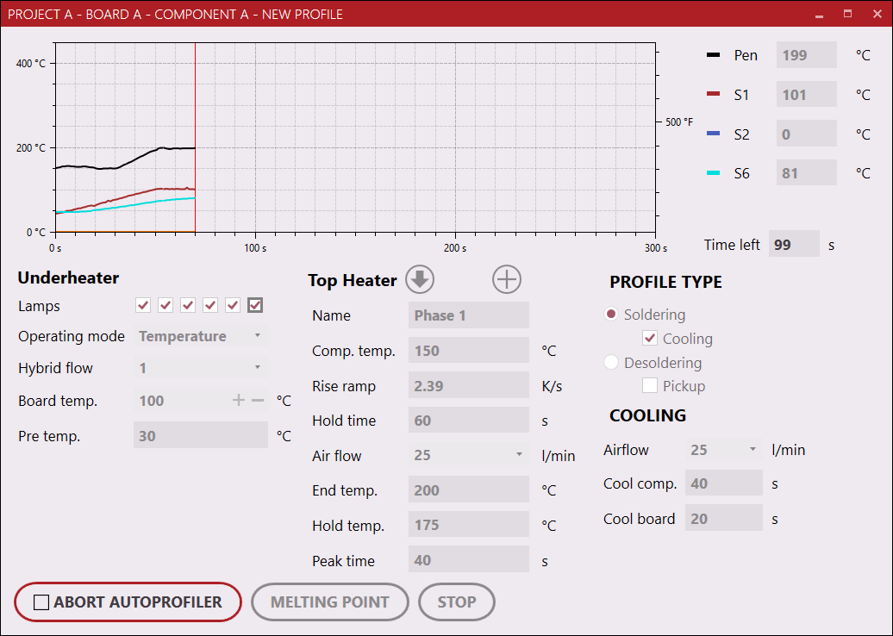
Run profile
Use the Run profile button on the Component profile window to execute soldering/desoldering using a previously configured component profile, without the need to attach sensors to the board or component.
You can choose between soldering and desoldering using the radio buttons in the Profile Type section.
Profile running steps
-
Launch the profile runner
Click the Run Profile button on the Component profile page. Just like in the autoprofiler case the Solder preparation window opens, which takes care of all the pre-soldering checks. -
Confirm pre-soldering checks in the Solder preparation window:
-
Check board setup
Verify that the board is properly fitted in the rework station assembly. -
Check board temperature
This is the same as in the Autoprofiler case. -
Solder nozzle offset check
This is the same as in the Autoprofiler case.
-
Check board setup
Press the Start button to begin the soldering process. When the last phase of the profile completes the rise ramp, the Stop and Extend Hold Time buttons become available. You can use these buttons to adjust the Hold time. If the profile does not need adjustments it will stop by itself when the hold time is reached.
- If you want to terminate soldering immediately, press the Stop button. If there is a pickup or cooling phase enabled, it will still run.
- If you want to continue running the profile past the original hold time, press the Extend hold time button. Then press the Stop button to finish soldering at the desired time.
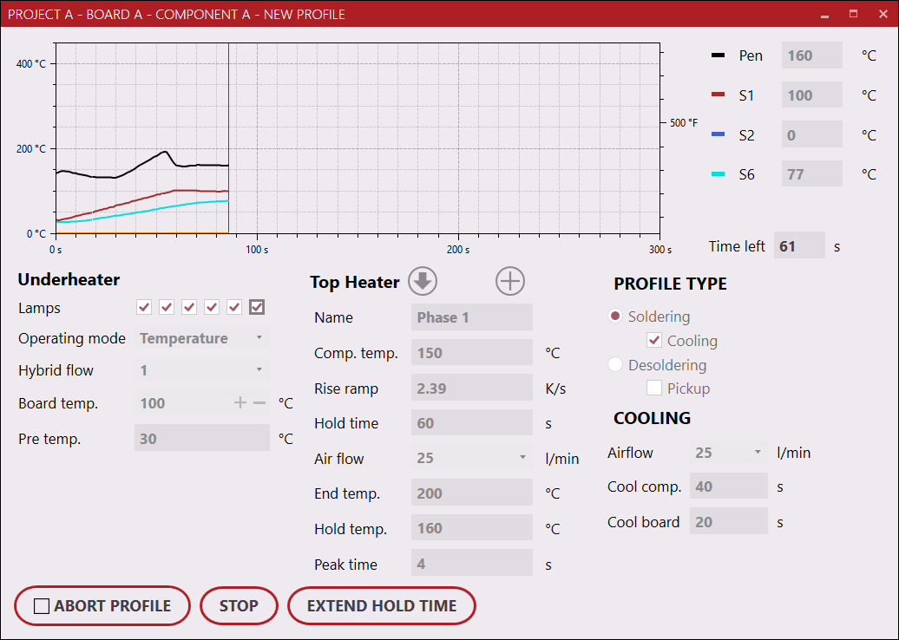
Profile run statistics window
The Profile run statistics window pops up automatically at the end of soldering, desoldering or running the top heater profiler. It contains various information about the completed process and allows to view and save a detailed process report.
Open report
This button opens a HTML report of the just finished soldering process in your default browser.
Save full report
This button saves the HTML report to disk. In addition to the report HTML file, additional data will be saved, that is needed to properly display the report.
Save report data
This is similar to the Save full report button, but it only saves the HTML report file. To view the report correctly, the additional data created by Save full report must be in the same folder.
This partial report saving is just a convenience feature that allows you to save disk space and reuse the same viewing data for more HTML reports.
Restart profile
This button closes the Profile run statistics window and runs the same profile/autoprofiler again, starting with pre-soldering checks.
Return to profile
This button closes the Profile run statistics window.
Close profile
This button closes the Profile run statistics and Component profile windows, and returns to the main window.
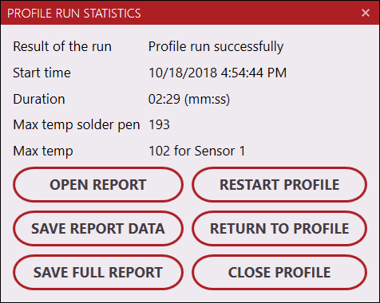
HTML report content
The chart created during profile execution is included in the report with a descriptive legend. The chart lines and sensor data use the same coloring convention as in the Component profile window.
| Report section | Displayed information |
|---|---|
| General soldering information | EasySolder version, Workspace path, Project name, Job name, Job description, Start time, End time, Duration, Soldering type, Connected underheater type, Rework station firmware version |
| Board data | Board name, Solder type, Underheater type |
| Component data | Solder nozzle, Component description |
| PC | Computer name, Operating system, MAC address |
| Underheater | Active underheater lamps, Operating mode, Hybrid flow, Board temperature, Preheat time, Rise power, Rise time, Break time, Hold power, Power drop rate |
| Top heater phase (each phase has separated section in report) | Rise ramp, Rise time, Hold time, Component temperature, Airflow, Start temperature, End temperature, Hold temperature |
| Cooling phase | Enabled, Airflow, Cool component time, Cool board time |
| Pickup phase | Enabled, Pickup type, Multi pickup |
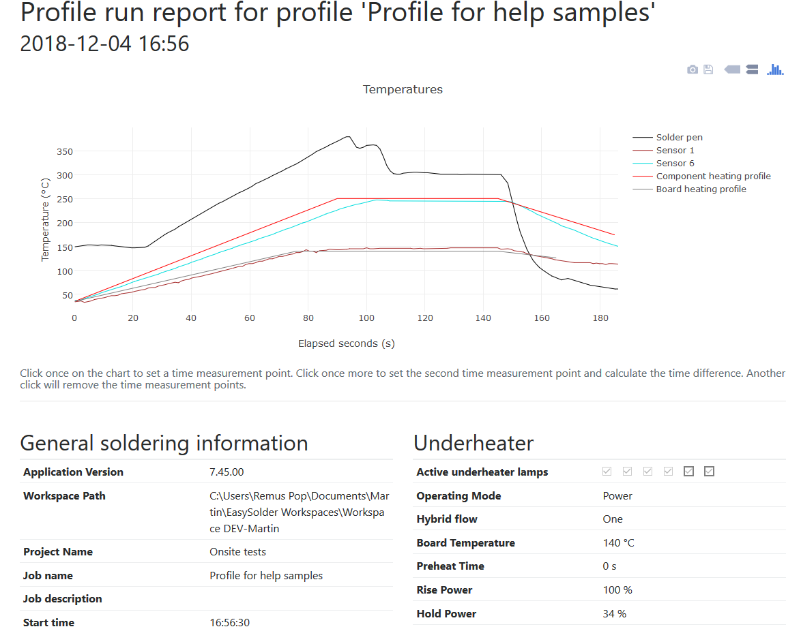
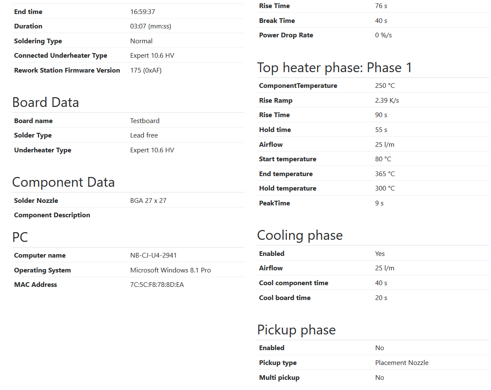
Clean pad
Use the Clean pad feature to remove residual solder from the board and other components. To use this feature, make sure that the application is connected to the rework station.
Temperature sensors are not required when performing clean pad, but they can be used to monitor temperatures as a guideline.
Clean pad window
| Control | Description |
|---|---|
| Lens | Displays the name of the used lens. |
| Light | Sets the ring light intensity. Values span from 0 = Off to 8 = Max. |
| Zoom | Scales the displayed image. |
| Temperatures control | Shows pen and sensor temperatures Values are updated once per second |
| Top heater air | Airflow for the solder pen. Measured in liters/minute. |
| Top heater temperature | Desired temperature of the solder pen. Minimum value: 20Maximum value: 450 |
| Underheater power | Power level of the underheater. Can be set between 0 and 100%. |
| Underheater flow | Airflow level of the underheater fans. Can be set between 1 (min.) and 7 + Cool. |
| Start button | Starts heating for the underheater and auxiliary solder pen. |
| Stop button | Stops heating. |
| Photo for inspection | Takes a snapshot of the current viewing area and saves it to disk. |
Notes
When connected to an EXPERT 04.6 rework station some elements are not available:
- Camera image
- Photo for inspection
- Underheater flow level
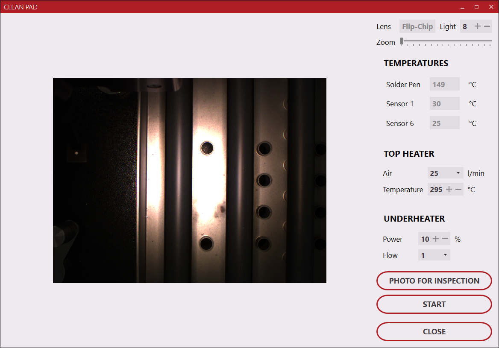
To run Clean pad, follow these steps:
- Select a component in the main window tree
- Open a component profile
- In the Component profile window, click the Clean pad button
-
In the Clean pad window, click the Start button. The underheater and auxiliary solder pen will start heating to the configured settings.
- You can change top heater and underheater settings to achieve the desired temperature on the board.
- Use the auxiliary solder pen and vacuum pen to remove residual solder from the board.
- Click the Stop button when done
Arm calibration
The calibration process on 10.6 must be executed before any placement procedure can be done. The purpose of the calibration routine is to measure arm and camera parameters. Because each camera lens has different parameters, a calibration will need to be performed for each one.
To run an arm calibration:
- Open the Arm Calibration window from the Main window -> Main menu -> Tools -> Arm calibration
-
Prepare the device for calibration
-
Remove PCB before calibration
Make sure there is no PCB board installed over the underheater before starting the calibration. During the process the nozzle will drop and execute a few low movements that could hit components on the board. - Usually the optimal light level for calibration and placement is
2. - If using Flip-Chip lens, install the micro-SMD nozzle and make sure the Micro-SMD Nozzle checkbox is checked.
-
Remove PCB before calibration
-
Click the Start calibration button
Most of the process is automated. The only step that requires user input is the Camera alignment. This step is performed only for the BGA lens.-
Camera alignment
- The nozzle is moved to the center of the driving area and a red circle appears in the image.
- Use an Allen key to adjust the camera so that the blob is inside the red circle. It does not have to be exactly in the circle's center, anywhere in the circle is OK.
- After verifying the camera is properly centered press the Continue button
-
Camera alignment
- After the calibration is completed you may close the window.
Arm calibration objectives:
- Ensures image brightness parameters have optimal values.
- Measures the arm movement capabilities and maps them to real-world units (millimeters and degrees).
- Allows the operator to adjust camera alignment.
- Calculates perspective parameters that ensure accurate component placement.
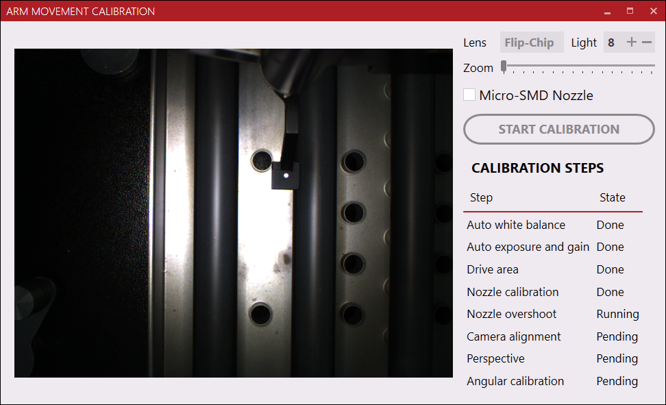
Notes
- This operation is available only when connected to a device.
- For Maxi BGA XL lens, camera calibration must be performed before arm calibration.
- The Camera alignment step can only be executed with the BGA lens. For all other lens types this step will be skipped. Therefore, when a rework station is first used after being installed, it is recommended to do an arm calibration with the BGA lens before using any other lenses.
-
Global application settings that affect the calibration process are listed below. See the Settings documentation for more information:
- Maxi BGA XL lens
- BGA/QFP 15 nozzle
Placement
Use the placement procedure to position BGA and QFN components on their target location.
This feature is available for EXPERT 10.6 devices with AVP arm. The AVP arm can place the component on its target location on the board. After marking both the target location and the component on the camera image, the placement process is executed automatically by the AVP arm.
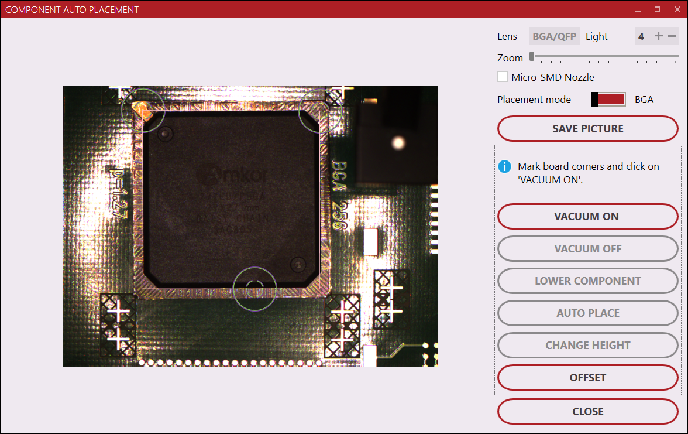
BGA placement procedure
To perform placement with a BGA component, follow the steps below:
- Make sure the software has calibration parameters for the used lens. If Arm calibration has been executed beforehand, you can open the Placement window directly. Otherwise the software will show a message requiring arm calibration when attempting to open the Placement window. Perform Arm calibration following the steps presented in the calibration section of this documentation.
- Set the board in place on the device
- Select the component in the main window tree
- Open the component profile window
- On the profile window, click Placement
- Make sure the Placement mode toggle switch is set to BGA
- You may use the Zoom slider to adjust image zoom. You can also adjust the image zoom with the mouse wheel while hovering over the image.
-
Mark the target location for the component
- Use the 3 markers to define the rectangle target location on the board. Two of the markers define adjacent corner points, and the third marker defines the opposite line.
- Click on the markers with the mouse and drag them to the desired location. The target rectangle will be updated accordingly.
- When the target rectangle is appropriately marked, click the Vacuum on button. The placement nozzle will move towards the center of the image.
- Attach the component to the placement nozzle
-
Make sure the component is not too rotated
- The placement nozzle can rotate approximately
10degrees left or right, depending on the hardware
- The placement nozzle can rotate approximately
- Click the Lower component button. The placement nozzle will drop closer to the board so that the component comes into focus.
-
Mark the component using the three placement markers
- The marking procedure is similar to marking the target location on the board
- When the component is properly marked click on Autoplace
- The nozzle rotates to align the component parallel to the target location
- Next, the arm travels to move the component above the target location
- Finally, the nozzle drives down until the component is placed on the board, and turns off vacuum to release the component
Hint
After clicking Lower Component, you may adjust the nozzle height by clicking on the Change Height button. This will bring up the Change Height window, allowing to move the nozzle up and down. A large movement has a length of 0.5 mm. A small movement has a length of 0.1 mm.
QFN placement procedure
The placement procedure for QFN components is similar to the BGA procedure. The only difference is at the end of placement: After clicking Autoplace, the component is positioned over the target location, but the nozzle will not further lower the component or turn off vacuum automatically. Instead, the component height is controlled manually to make sure solder paste is protected. Turning off vacuum finalizes the QFN placement procedure.
To perform placement with a QFN component, follow the steps below:
- Make sure the software has calibration parameters for the used lens. If Arm calibration has been executed beforehand, you can open the Placement window directly. Otherwise the software will show a message requiring arm calibration when attempting to open the Placement window. Perform Arm calibration following the steps presented in the calibration section of this documentation.
- Set the board in place on the device
- Select the component in the main window tree
- Open the component profile window
- On the profile window, click Placement
- Make sure the Placement mode toggle switch is set to QFN
- You may use the Zoom slider to adjust image zoom. You can also adjust the image zoom with the mouse wheel while hovering over the image.
-
Mark the target location for the component
- Use the 3 markers to define the rectangle target location on the board. Two of the markers define adjacent corner points, and the third marker defines the opposite line.
- Click on the markers with the mouse and drag them to the desired location. The target rectangle will be updated accordingly.
- When the target rectangle is appropriately marked, click the Vacuum on button. The placement nozzle will move towards the center of the image.
- Attach the component to the placement nozzle
-
Make sure the component is not too rotated
- The placement nozzle can rotate approximately
10degrees left or right, depending on the hardware
- The placement nozzle can rotate approximately
- Click the Lower component button. The placement nozzle will drop closer to the board so that the component comes into focus.
-
Mark the component using the three placement markers
- The marking procedure is similar to marking the target location on the board
- When the component is properly marked click on Autoplace
- The nozzle and arm will move to align the component over the target location
- Click the Change Height button to bring up the Height window.
- Use the Up/Down buttons to lower the component to the board
- When the distance between the component and board is ok close the Height window
-
Click the Placement End button.
- Vacuum will be turned off. Placement nozzle is lifted and moves out of the way.
Placement with EXPERT 05.6
EXPERT 05.6 does not have an AVP arm, therefore does not need an Arm calibration. The placement procedure is executed manually using MCP arm (camera is supported).
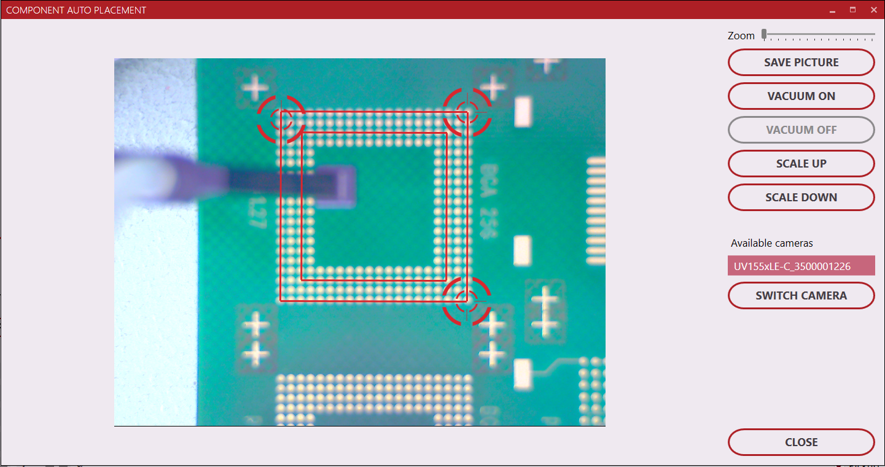
To perform a placement, follow the steps below:
- Set the board in place on the device.
- Select the component in the main window tree.
- Open the component profile window.
- On the profile window, clik Placement.
- It could happen, that the camera is not detected correctly, if this happens, select the desired camera from the Available cameras list, then click on the Switch camera button in order to switch the camera to the desired one.
- You may use the Zoom slider to adjust image zoom. You can also adjust the image zoom with the mouse wheel while hovering over the image.
-
Mark the target location for the component
- Use the 3 markers to define the rectangle target location on the board. Two of the markers define adjacent corner points, and the third marker defines the opposite line.
- Click on the markers with the mouse and drag them to the desired location. The target rectangle will be updated accordingly.
- When the target rectangle is appropriately marked, click the Vacuum on button.
- Attach the component to the placement nozzle.
- Use MCP arm to manually align the component over the target location.
- After the component is in the target location, turn off the vacuum using Vacuum off button to release the component.
Tools
Camera calibration
Camera calibration is required only for the Maxi BGA XL lens. This process determines a set of optical parameters (focal length, principal point, distortion) that cannot be measured during the arm calibration process due to the increased image size.
General information
- The operation is available when being connected to device.
- Chessboards are used in the calibration process.
- Maxi BGA XL lens needs to be enabled in Settings from File menu.
-
Chessboard images can be included in
\Users\{Current User}\AppData\Local\Martin\EasySolder\{App. Version}\Chessboardsin order to skip taking pictures manually. These images must be the pictures from a previous calibration taken on the same device with the same lenses.- Old chessboard pictures cannot be reused when focus or aperture have changed.
- If the chessboard images where included manually in the folder, the application automatically recognizes them and Calibrate button is used directly.
- When the option presented above is not available the chessboard images need to be scanned manually using device camera.
- When scanning the chessboards Detect button is used, then Calibrate button.
- Clear button deletes the chessboard images saved in the folder.
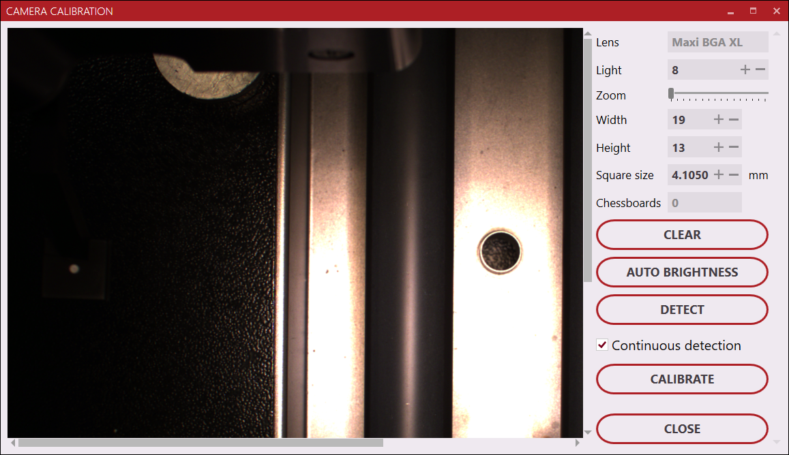
Camera calibration steps
The calibration chessboard pattern must be placed on a hard and very flat surface that does not bend (E.g. glass).
-
Make sure the settings in the Camera calibration window are correct
- When using the chessboard rig provided in the file CalibrationPattern for MaxiBGA XL.png then the settings are probably already set to the right values.
- Width value should be equal to number of horizontal squares minus one
19 - Height value should be equal to number of vertical squares minus one
13 - Square size value should be equal to the side of the square in millimeters. Please make sure this value is as accurate as possible. A digital caliper tool can be used for measuring the square size.
- For better precision more squares can be measured than the value must be divided to the number of squares
- Take the pictures using the Detect button
-
When a chessboard is not detected:
- Stop the detection by disabling the Continuous detection checkbox
- Slightly move the chessboard
- Enable Continuous detection and press Detect again
- After pictures were made in every position covering the board, click the Calibrate button. Calibration will take a couple of minutes.
Picture categories needed
- Chessboards as far away from the camera as possible but still in focus
- Chessboards as close to the camera as possible but still in focus
- Chessboards somewhere between the close and far from the camera For the flat pictures categories above make sure to cover the whole picture area with an image sequence.
- Tilted chessboards (up, down, left right)
- Tilted pictures close to the image margin
Camera alignment
-
Insert the normal BGA lens and attach BGA/QFP 10 nozzle
- Other lenses or nozzles cannot be used for this step
- Make sure the BGA/QFP 15 nozzle is disabled in File->Settings
- Make sure there is no board/PCB installed over the underheater
- Run Arm calibration
-
In the camera alignment step the blob needs to be inside the red circle. It does not need to be exactly in the circle center, just inside the circle is good.
- When alignment is good, press Continue
- Wait for the rest of the calibration steps to finish and close the calibration window
Light and focus adjustment
- Insert BGA/QFP 15 nozzle and Maxi BGA XL lens
- Enable BGA/QFP 15 nozzle in File->Settings
- Open Tools -> Camera calibration
- Insert the board/PCB on the underheater
- Set light to 0
- Click on Auto brightness and wait for it to finish
-
If light is not ok, adjust the aperture on the lens and click on Auto brightness again.
- Repeat this step until light is ok.
- Please use the smallest aperture possible, to ensure the largest focus area for the lens.
- Once light is ok, use a lock screw for the camera to fix aperture and make sure it does not change by accident.
- Move the camera calibration window out of the way and select the main window.
- Press Ctrl+Shift+S to open the Serial control window.
- Enable the Place up switch and then disable it. The nozzle will drop. Do not close Camera calibration window while nozzle is dropped because it will move the arm.
- Adjust focus on the lens until both the blob and PCB are clear.
- Once focus is ok, use a lock screw to fix it in place and prevent it from being changed by accident.
- In Serial control window enable the Place up switch to lift the nozzle.
- Close the Serial control window.
- Remove the board/PCB from the underheater.
- If the lens has no lock screws, use duct tape or kapton tape to prevent aperture and focus from being changed by accident.
Dispensing settings
Dispensing settings can be accessed from Tools menu. Device must have integrated dispensing feature in order to be able to perform the operation. The integrated dispensing pen of the device allows the precise dispensing of a wide variation of media (SMD adhesive, solder paste, flux cream). Two dispensing options are available
-
Point dispensing
- Viscosity and Volume are set
-
Line dispensing
- The pressure is set in
barmeasurement unit
- The pressure is set in
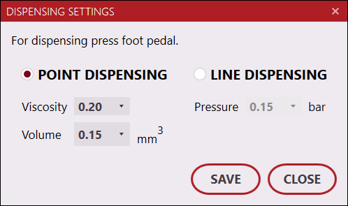
Steps to perform dispensing
- Open Tools menu
- Select dispensing option
- Set dispensing parameters for the chosen dispensing type
- Press foot pedal available on the device
- Use dispensing pen to complete the operation
Fans
Fans can be controlled independently using Tools menu option. Fans are available only on EXPERT 10.6 device.
Steps to control fans
- Open Tools menu
- Select Fans
- Click Start/Stop
Vacuum
The vacuum for nozzle and vacuum pen can be controlled independently of component profile section. It can be accessed using Vacuum option from Tools menu. In order to perform the operation, the device and external pressure must both be connected.
Temperatures
Temperature monitoring window can be accessed from the Tools menu.
Sensors connected to device are displayed with their corresponding temperature in Celsius (°C).
![Temperature-monitoring.jpg]()
Application settings
Application settings window is accessible from Main menu->Settings. The following settings are available
-
Maxi BGA XL lens
- This option needs to be selected when using the Maxi BGA XL lens
- If this option is not set the software will detect the lens as Flip-Chip
-
BGA/QFP 15 nozzle
- Enable this checkbox for accurate placement when the BGA/QFP 15 nozzle is used
- It is also recommended to run an arm calibration after changing this setting
Toast notifications
Click on the toast notification to find out more details about the problem or operation.
Firmware requirements
The application only works with device having the required minimum firmware version (specified below). In case of older firmware version, a warning message is displayed at application start.
| Device type | Required firmware ID |
|---|---|
| EXPERT 10.6 | 0XAF |
| EXPERT 04.6 | 0X6B |
Glossary
| Term | Description |
|---|---|
| Reflow soldering | Reflow soldering is a process in which a solder paste (a sticky mixture of powdered solder and flux) is used to temporarily attach one or several electrical components to their contact pads, after which the entire assembly is subjected to controlled heat. This melts the solder, permanently connecting the joint. Heating may be accomplished by passing the assembly through a reflow oven or under an infrared lamp or by soldering individual joints with a hot air pencil. |